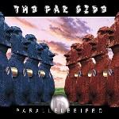

Home Artist links Label link

The Far Side - Parallellebiped
| Artist: | The Far Side |
| Title: | Parallellebiped |
| Label: | Mellow |
| Length(s): | 55 minutes |
| Year(s) of release: | 2003 |
| Month of review: | [07/2003] |
Line up
Simone Montrucchio - lead vocals, bass, keys, bass pedals, midi programming
Lorenzo Fasanelli - guitars, backing vocals
Davide Guidoni - drums, percussion
Tracks
No titles provided
| 1) | | 7.04
|
| 2) | | 7.26
|
| 3) | | 4.51
|
| 4) | | 7.34
|
| 5) | | 7.02
|
| 6) | | 4.05
|
| 7) | | 5.05
|
| 8) | | 11.55
|
Summary
The Far Side exists since 1998, but the members go back to 1989, having played together in Invisible Sun and Crystal Gaze.
The music
Most of the tracks feel quite a lot like earlier material of the Dutch band For Absent Friends and, less clearly, Marathon (the Dutch one). Short to mid long compositions carried by strong guitar. Initially the sound is pretty boxed, like if the music was recorded in a shoe box. Halfway through the second track this seems to clear a bit, although it remains below average. Montrucchio's vocals often are too insecure to make an impression, reflecting on the rest of the music, which in itself is played okay(ish). This combined with most of the bridges coming across a bit laboured, as the compositions as a whole do, to a lesser extent, doesn't make for an enticing whole.
Track 4 has a bit of a Rush feel, especially in the use of guitar, although there is a switch to Marillion as the track progresses towards the vocal section.
Track 7 sounds a bit sketchy, in both its accompaniement (the boxed sound again) as well as in the insecure sounding harmonies. Not an addition to the album.
Conclusion
This album would have fitted in nicely with the material that was released on the Dutch SI Music label in the early nineties. Especially those who like For Absent Friends might find a bit in this album, and as you might already expect, originality is not it. Having said that, The Far Side still has a bit of work left to do before reaching the level FAF operated at when they had their first release. Those who hate neo prog should steer away from this definitely.
The copy I reviewed was a possibly self released CDR version, with rather flat sound. I'm not sure how the real Mellow release sounds.
© Roberto Lambooy